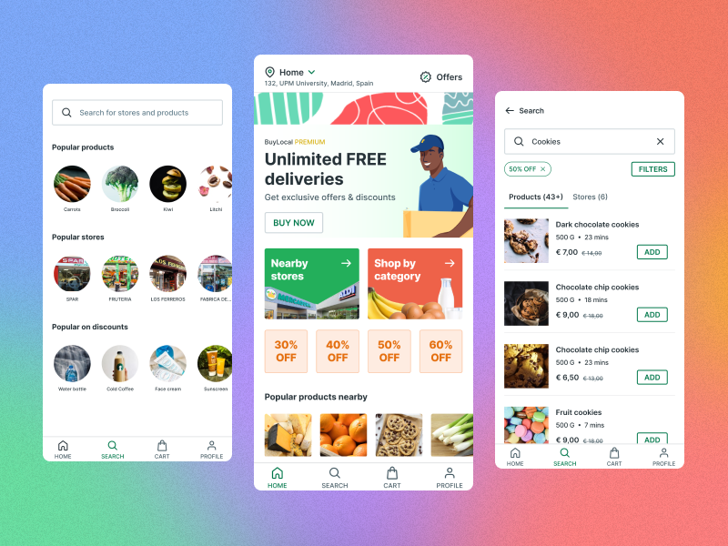

BuyLocal
| BuyLocal is a Hyperlocal delivery solution to help customers buy products from nearby stores and supermarkets easily and support the local economy. | |
| Case Study |
BuyLocal is a Hyperlocal delivery solution to help customers buy products from nearby stores and supermarkets easily and support the local economy.


BuyLocal was a project done during the pandemic. I started noticing how local businesses (mostly grocery stores) around me were struggling due to the strict lockdowns and people ordering from bigger online businesses. I started envisioning a way for people to be digitally connected to businesses around them with the same convenience as with big corporations.
Table of Contents
Objectives
- Efficient & convenient shopping.
- Promote the purchase of local products.
- Improved visibility of products from local stores & supermarkets.
User Research
Before getting started, it was important to know the initial target group.
Since I just had a rough idea, I began my research with customers who buy their daily or weekly groceries from supermarkets or local stores.

I wanted to obtain a deeper understanding of the reasons behind their current preferences around supermarkets and local shops:
- What do they base their shopping decision on?
- What do they miss while shopping from local stores?
- What are the hurdles of shoppers while buying groceries?
User interviews & Contextual inquiry
I interviewed 10 users from 2 different countries (India and Spain) to get different perspectives on how grocery shopping is perceived. 2 contextual inquiries were also performed to understand the mental models of the users in situ.

Most of the user interviews were remote and a wide range of tools (Google Meets, Zoom, Microsoft Teams) was used to accommodate their needs. The meetings were scheduled using Google Calendar.

The contextual inquiry had the aim of observing the spontaneous behavior of participants in their natural surroundings while performing certain tasks. It also helped generate new ideas and new ways to approach the problem. This also had an additional advantage of being able to ask questions and understand the motivation behind every user action.

User Research Results
The interviews and contextual inquiries were transcribed and thematically coded to get clarity from the research data. These are the categories that were derived from the results, as an answer to the query of what customers base their grocery shopping decisions on:


Quantitative results
Here are some of the quantitative results we squeezed out of the research,

Qualitative results
Here are some of the qualitative results that were extracted out of the research:
Customer Pains
- Shipping related concerns while shopping online
- Inefficiency in shopping from multiple shops
- Limited product diversity
- Bad customer experience in supermarkets
General Preferences of Customers
- They like to buy efficiently & conveniently
- Prefer to buy from nearby stores & supermarkets
- They value product quality & pricing
Opinions & behaviors with online shopping
- Customers casually browse on e-commerce platforms
- They like to save time & compare products
- They like the wide product range & multiple sellers
Opinions & behaviors with local supermarkets
- Customers shop once or twice a week
- Prefer the organized product shelf
- Like the product diversity & the in-house products
User Persona
The demographic data and characteristics of the users were used to design one user persona that focuses on the identified target group (Young adults).

User need statements
As a distillation of Jonathan’s expectations with the product, I crafted three user need statements:
- Jonathan needs to know the local offer better in order to plan his groceries, saving as much time as possible.
- Jonathan needs to find local products available for online shopping, so he can boost his local economy without going out of his comfort zone.
- Jonathan needs a way to get notified about discounts and offers from the stores around, so she can save some money when doing groceries.
User tasks
2 unique tasks were deduced that could be typically pursued by Jonathan:
- Buying fresh products from supermarkets: Jonathan ran out of some groceries, so he needs to refill them before dinner. He heads to his regular supermarket with his shopping list so that he could do his shopping efficiently without wasting any time. He has some local products to buy on his list too. He just finds a plastic or a fabric bag before going out.
- Buy non-perishable products online: Jonathan loves to use technology and likes to shop online for its convenience. He wanted to order some electronics along with some general-purpose products. So, he had a few in his cart which he wants to buy using digital payments.

Prototypes
For each prototype, the user flow is described and multiple iterations of prototypes in increasing fidelity are shown.
Task 1: Buy cheese
User Flow
Use the Buy Local app on your phone to buy cheese (Camembertiz Beritzarana, one unit of 400G pack) after exploring the product details (to know the origin and ingredients of the product) from a nearby store (Garijo María) and get the order delivered through a No-contact delivery mode to your saved home address by paying with your saved credit card. Finally, track your order to get live updates about your order.

LoFi Prototype 1 (Paper and Pen)

LoFi Prototype 2 (Balsamiq)

HiFi Prototype (Figma)


Task 2: Buy cookies
User Flow
Use the BuyLocal app on your phone to buy cookies (Chocolate chip cookies, two packs of 500G packs) that have the lowest effective price after a discount of 50% OFF without exploring the product details page. Activate the 1-month Buy Local premium subscription to get an additional discount and a FREE delivery on your current order that would be delivered through a No-contact delivery mode to your home address by paying with your saved credit card. Finally, track your order to get live updates about your order.

LoFi Prototype 1 (Paper and Pen)

LoFi Prototype 2 (Balsamiq)

HiFi Prototype (Figma)


Takeaways
- This project made me connect with people around me in a way I had never done before. It showed me that people’s mental models are more complex than what is initially apparent, and nuanced, user-research-backed solutions to their problems are instrumental to their well-being.
- I discovered Design Systems through this project, which is a tool I have kept using after it and it has increased my efficiency when designing and also the quality of my output.